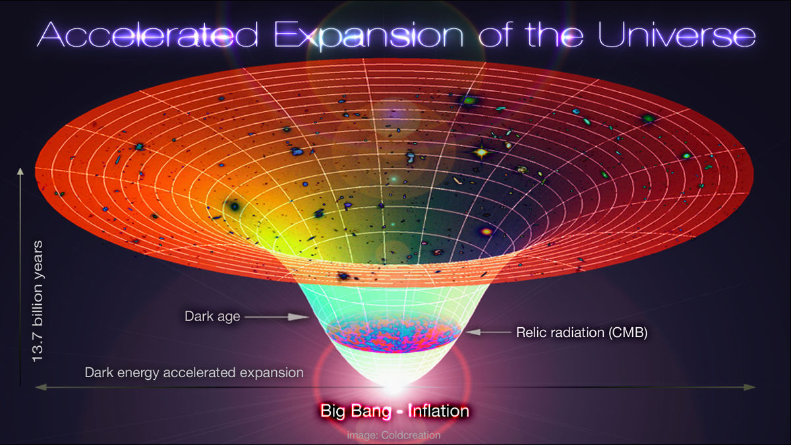
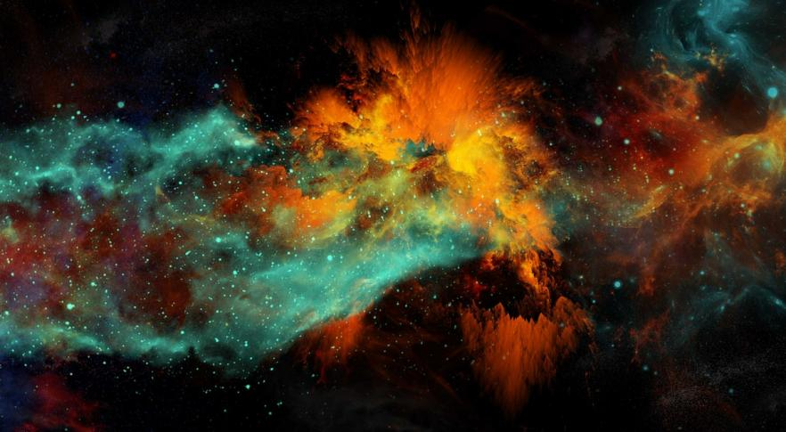

Origen del Universo:
El Big Bang es el modelo cosmológico que explica cómo el universo se originó a partir de una
singularidad, un estado de densidad y temperatura infinitas, hace aproximadamente 13.8 mil
millones de años.
En ese momento inicial, toda la materia, energía y espacio estaban concentrados en un punto
extremadamente pequeño y caliente

Expansión del Universo:
Según el modelo del Big Bang, el universo comenzó a expandirse desde ese punto extremadamente
denso y caliente.
La evidencia de la expansión proviene de observaciones como el corrimiento al rojo de la luz de
galaxias distantes, lo que indica que están alejándose de nosotros.

Evolución del Universo:
A medida que el universo se expandía y se enfriaba, los átomos de hidrógeno y helio se agruparon
bajo la influencia de la gravedad para formar las primeras estrellas y galaxias.
Estas estructuras cósmicas posteriores evolucionaron con el tiempo, formando la red cósmica que
vemos hoy en día.
